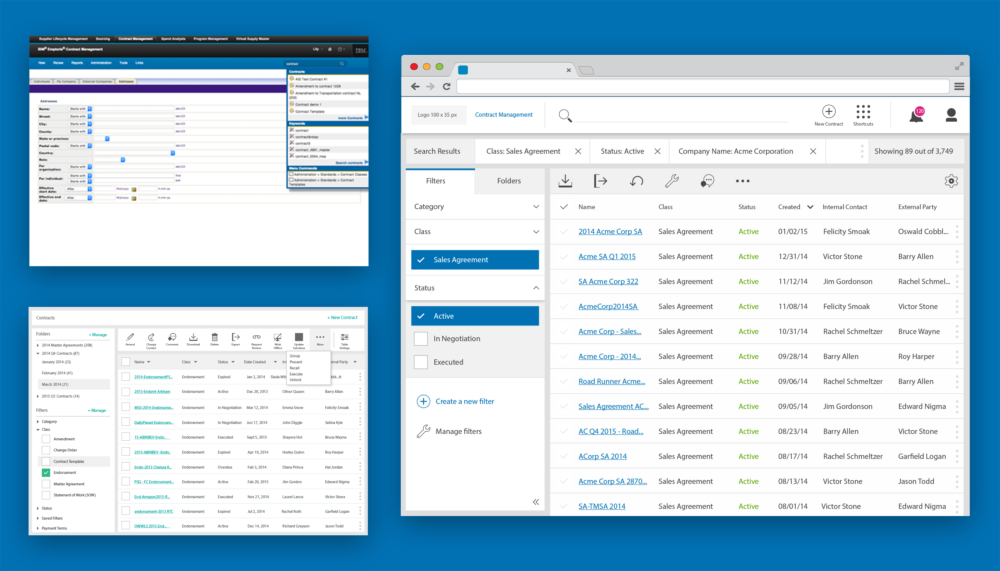
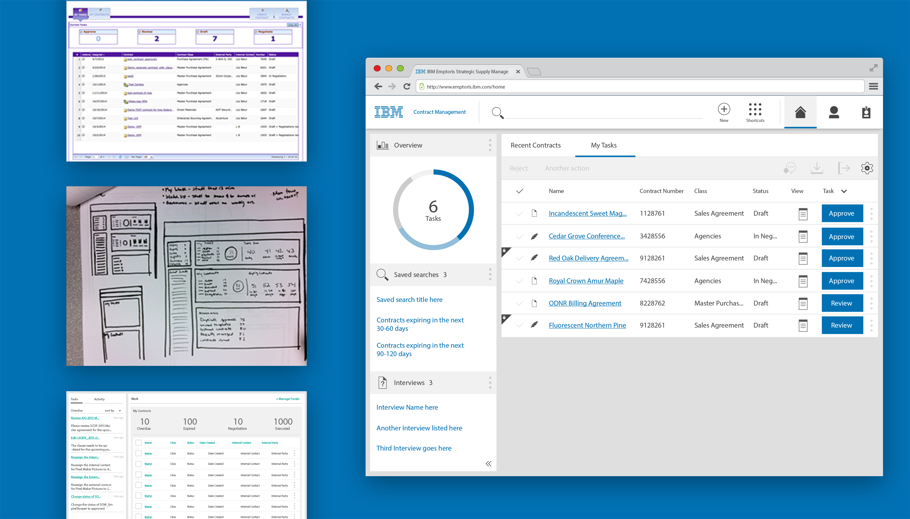
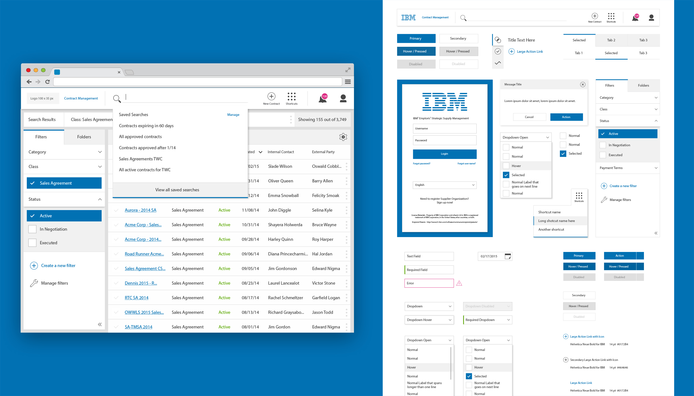

TL
Background
In June of 2014, I spent 18 months as a UX designer on Emptoris Contract Management (ECM). My role on the team was to rethink the experience and visual design for the search, dashboard, and contract editor. The team’s goal was to fit Emptoris with a new user experience while maintaining the current list features that our customers currently love.
ECM is a product that manages the lifecycle of contracts among users through continuous communication. Users are able to create and track contracts through its different stages and easily send notifications to alert users.
Research
As we began the redesign of Contract Management, we held monthly meetings to review the beta with customers, and receive constructive feedback. From the customer research, we established that the largest pain points in Contract Management were:
- Lack of overall visibility across the lifecycle of contracts
- No collaboration among users
- Lack of support and integration between other products in the suite

Once we felt comfortable with the preliminary research, we narrowed down our focus points to:
- Searching and locating any contract in the system and take action on that contract
- Surfacing 80% of their work from a homepage to expedite the contract to it’s final approval
In the end, our mission was to deliver a product that focuses on improving the client’s visibility into the contract lifecycle, improve the time to value, and reduce risk with the agreed terms and conditions. From there we created moodboards, empathy maps, personas, storyboards, and current/future scenarios to help mold each experience and tailor them for the major focus points.
Search and Search Results
The team felt there was a massive opportunity to empower the user with a search function that allowed them to input any data and receive relevant data in return. There were 52 different types of search criteria and on average took users 9-14 minutes to go through the ‘advanced search’ criteria. Filters was also another issue as most of the outcomes weren’t as accurate as users needed.
Our goal was to incorporate a powerful search engine that would index all 52 criteria, give accurate results, and accelerate their workflow. This included major changes to the search engine that would display intelligent results, the ability to save a specific search, and display recent searches.

Many iterations later, we discovered that the search may not be as important to their future workflow. Customers believed that searching was the only way to start their work, but I believed that a new dashboard could display everything they needed without initiating a search.

In the final designs we shifted a new look and feel that maintains the purpose and intention of Emptoris but gives it a new experience, front to back. We took half of the 52 ‘advanced’ search criteria, indexed them in the back, and placed them inside a single search bar. Once a search was initiated, filters were shown on the left and users were able to narrow their results further at will. Users can pin and unpin filters if they consistently use a certain set.
Homepage/Dashboard
Our current homepage is valuable in showing all of the current contracts the users are responsible for, seeing the status of those contracts, and then able to take action on them. However, it didn’t provide any relevance to most users, because they would simply search for the contract. Many users have tasks that need to be completed in a given timeframe, but don't’ have enough information to know what kind of action to take up on that contract.
The goal was to design a homepage that allowed the users to begin their work and reduce the amount of unnecessary layers to find detailed information. With this in mind, we could design an experience that felt fresh and served as an ally to their productivity, rather than an enemy.
Another roadblocks we came across was the amount of columns we would allow inside of the table. Users currently had complete freedom into the amount of columns they could use in their tables. To allow for this, Emptoris gave the table a fixed width and the ability to horizontally scroll to reveal the overflow.
We solved this by forcing the user to choose between a set number of columns. That way the user could see the relevant data, and then open the contract summary if they wanted to see more. This allowed for a more fluid and responsive grid. And allowed for more columns to show depending on the size of their browser window.

Towards the end, we knew that the dashboard wasn’t the best representation but it did encompass all the requirements and requests. For future releases, we wanted to explore more data visualization, the lifecycle of each contract, and a way to add more personalization that would empower the user based on their specific role.
Visual Design
While company personalization was one of the biggest requests from users, we had the opportunity to completely change the visual design of ECM. We started with several research meetings and we understood that customers wanted an interface they could trust. By using IBM’s logo and colors the end user’s didn’t trust the product, especially when most of the end users didn’t work for our customer.
Our goal was to design an interface that could be ‘brandable’, which lets our customers to incorporate their own logo and the ability to select it’s company colors. We wanted to make sure that the colors were accessible regardless of the colors selected by our uses and didn't’ want to distort the company logo in any way.
Several quick iterations insuded and included every color of the rainbow. Most iterations included changing the entire header bar color, but we would have to change the font color depending on the contrast. Others iterations included making it blue and not allowing for the header to be branded. Instead of playing with the color, we decided to make it white and worry about every other aspect of the branding requirements.

In the end, the white header stuck. This allowed our users to upload any image format, see subtle highlights from their chosen colors, and was accessible. Although the interface was bland, it empowered the our customer’s colors to shine without overwhelming them in a sea of colors. Status colors and links remained (mostly) unchanged from our early iterations and we limited the amount of colors on icons.